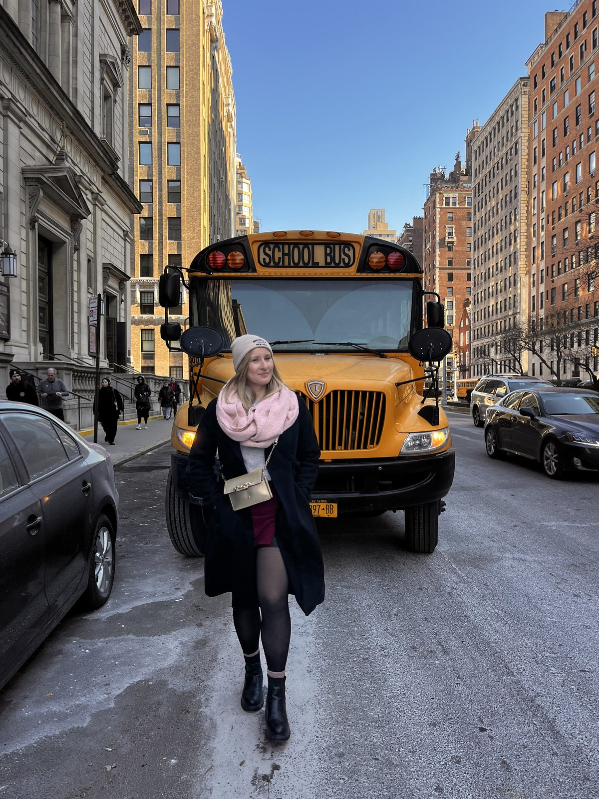

Derrière Go Evasio, il y a une seule personne : moi, Céline. Une vraie passion pour la route, des itinéraires testés sur le terrain, et une mission simple — te permettre de visiter la destination de tes rêves, à ton rythme. Je ne construis pas des voyages "Pinterest", mais des voyages réalistes, fluides et mémorables.

Je m'appelle Céline et je suis passionnée de voyages depuis toujours. Pour moi, découvrir un pays, c'est le traverser, le ressentir et le vivre à son rythme — pas le survoler. Au fil des années, cette passion s'est transformée en une véritable addiction : celle d'organiser des road trips. À force de préparer, peaufiner et tester moi-même mes itinéraires, j'y ai pris un plaisir immense.
J'ai sillonné la Jordanie, traversé les routes des États-Unis, exploré la Croatie, et arpenté des villes inoubliables comme Rome, Londres ou New York. Chaque itinéraire, je l'ai d'abord vécu avant de le recommander. C'est cette expérience concrète, vécue sur le terrain, qui fait toute la différence entre un voyage "moyen" et un voyage qui marque une vie.
J'ai vu trop de voyageurs passer plus de temps à organiser leur séjour qu'à réellement en profiter — des heures perdues entre dix onglets ouverts, des choix faits par défaut, et au bout du compte, un voyage en deçà de leurs rêves. Go Evasio est né de cette frustration, et de l'envie de mettre ma passion au service des autres.
Je me suis donc spécialisée dans cette branche du tourisme : la création de road trips et d'itinéraires sur mesure. Ma mission ? Permettre à chacun de visiter la destination de ses rêves, sans stress, sans perdre de temps, et surtout à son propre rythme.
Entrée dans le secteur du tourisme, au contact direct des voyageurs et de leurs attentes réelles — bien différentes de ce qu'on imagine depuis un bureau.
Des années à observer ce qui fait vraiment la différence dans un voyage : la logistique bien pensée, les bonnes adresses, le bon rythme.
Une double casquette acquise en parallèle : comprendre comment les voyageurs cherchent, comparent et décident, pour mieux répondre à leurs besoins.
Des road trips préparés et testés personnellement : la Jordanie, les États-Unis, la Croatie, et des villes comme Rome, Londres ou New York. Chaque recommandation vient d'une expérience vécue, jamais d'un simple copier-coller.
La création de Go Evasio pour transformer cette double expertise en itinéraires sur mesure, accessibles à tous les types de voyageurs.
Une connaissance fine du secteur, des destinations et des standards de qualité.
Une compréhension précise des envies et des attentes des voyageurs d'aujourd'hui.
Jordanie, USA, Croatie, Rome, Londres, New York… des road trips vécus avant d'être recommandés, jamais une simple recherche en ligne.
Go Evasio, ce n'est pas une agence classique, ni un catalogue de voyages standardisés. C'est un univers de mouvement, de liberté et de fluidité — où chaque itinéraire est pensé comme une histoire, pas comme une liste de cases à cocher.
Parlons de ton prochain road trip.